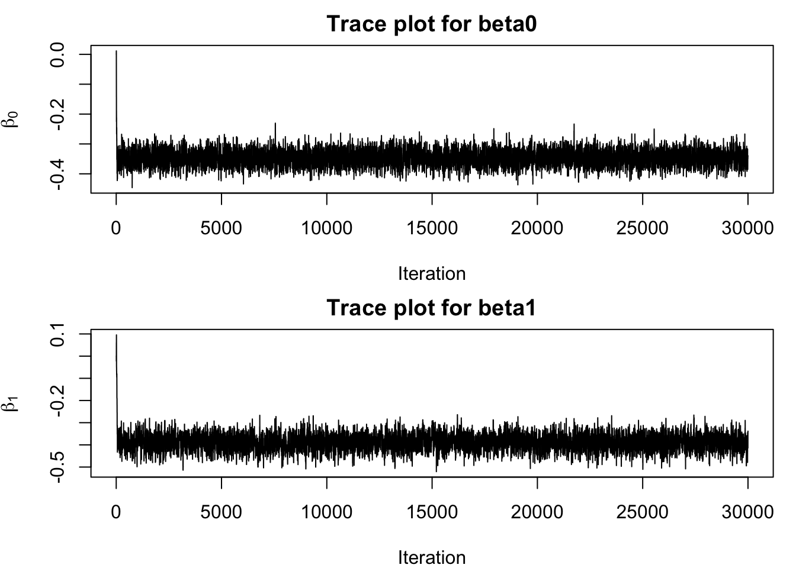

The independent binomial likelihood is \[
L(\beta_0,\beta_1)
=
\prod_{j=1}^{8}
\binom{n_j}{z_j}
p_j^{z_j}(1-p_j)^{n_j-z_j},
\qquad
p_j=\frac{e^{\beta_0+\beta_1x_j}}
{1+e^{\beta_0+\beta_1x_j}}.
\]
Up to an additive constant, the log likelihood is \[
\begin{aligned}
\ell(\beta_0,\beta_1)
&=
\sum_{j=1}^{8}
\left[z_j\log p_j+(n_j-z_j)\log(1-p_j)\right]\\
&=
\sum_{j=1}^{8}
\left[
z_j(\beta_0+\beta_1x_j)
-n_j\log\left(1+e^{\beta_0+\beta_1x_j}\right)
\right].
\end{aligned}
\]
The independent normal priors give \[
\log p(\beta_0)+\log p(\beta_1)
=
-\frac{\beta_0^2}{2(2.5^2)}
-\frac{\beta_1^2}{2(2.5^2)}
+C.
\]
Adding the log likelihood and log priors gives \[
\boxed{
\begin{aligned}
\log\tilde p(\beta_0,\beta_1\mid z,n,x)
={}&
\sum_{j=1}^{8}
\left[
z_j(\beta_0+\beta_1x_j)
-n_j\log\left(1+e^{\beta_0+\beta_1x_j}\right)
\right]\\
&-\frac{\beta_0^2+\beta_1^2}{12.5},
\end{aligned}
}
\] up to an additive constant.
Question 2
For the symmetric normal random-walk proposal, the acceptance probability is \[
\alpha
=
\min\left\{
1,
\frac{\tilde p(\boldsymbol{\beta}^{\star}\mid z,n,x)}
{\tilde p(\boldsymbol{\beta}^{(t)}\mid z,n,x)}
\right\}.
\]
The log posterior values are approximately \(-291.07\), \(-126.01\), and \(-18731.68\), respectively. The largest occurs at \((-0.35,-0.37)\). This makes sense because it predicts confirmation probabilities below 0.5 that decrease with duration. In contrast, \((0,0)\) predicts 0.5 in every bin, while \((5,5)\) predicts probabilities close to one in most bins.
par(mfrow =c(2, 1), mar =c(4, 4, 2, 1))plot( run1$draws[, "beta0"],type ="l",xlab ="Iteration",ylab =expression(beta[0]),main ="Trace plot for beta0")plot( run1$draws[, "beta1"],type ="l",xlab ="Iteration",ylab =expression(beta[1]),main ="Trace plot for beta1")

par(mfrow =c(1, 1))
I used 30,000 iterations with a proposal standard deviation of 0.04. The acceptance rate was approximately 44.68%. Both traces settle quickly and continue fluctuating without an obvious long-term trend, so I kept the proposal scale at 0.04.
Question 5
run2 <-rw_metropolis( x, n, z,iterations =30000,prop.sd = prop.sd,start =c(1, -1))run2$acceptance_rate
Both chains appear to explore the same region after the first few hundred iterations. Their traces overlap and fluctuate around similar values despite the different starting points. This supports that the later draws are not strongly affected by the starting values.
Question 6
warmup <-1000retained <- run1$draws[seq.int(warmup +1, nrow(run1$draws)), , drop =FALSE]nrow(retained)
[1] 29000
I discarded the first 1,000 iterations because both chains appear to settle within the first few hundred iterations. I retained all remaining 29,000 draws from the first chain without thinning.
The posterior mean of \(\beta_0\) is \(-0.3464\), with a central 95% credible interval of \((-0.3960,-0.2963)\). The posterior mean of \(\beta_1\) is \(-0.3894\), with a central 95% credible interval of \((-0.4615,-0.3176)\).
All 29,000 retained slope draws are negative, giving \[
\widehat{P}(\beta_1<0\mid z,n,x)=1.
\]
This provides strong posterior support that candidates with longer transit durations have lower confirmation probabilities under this model. The Monte Carlo estimate of 1 does not mean the exact posterior probability must equal 1.
The logistic curve captures the overall decline but does not describe the binned pattern well. It overestimates confirmation proportions in the first bin and the three longest-duration bins, while missing the higher proportions in several middle bins. The credible band reflects uncertainty about the fitted probabilities; it is not a predictive band for observed proportions.
Question 9
For a candidate with a 5-hour transit duration, \[
x^\star=\log(5/3.8)\approx 0.2744.
\]
For each retained draw, \[
p_\star^{(s)}
=
\operatorname{logit}^{-1}
\left(\beta_0^{(s)}+\beta_1^{(s)}x^\star\right).
\]
The posterior mean confirmation probability is 0.3886, with a central 95% credible interval of \((0.3761,0.4015)\).
Given the data and this model, the interval contains 95% of the posterior probability for the confirmation probability of a 5-hour candidate. It does not determine whether an individual candidate will be confirmed; its outcome is either confirmed or false positive.